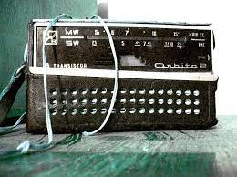
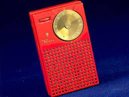

A primeira transmissão de rádio foi feita em 1896, entre dois navios de guerra italiano, essa transmissão foi Realizada pelo cientista italiano Guglielmo Marcon.

Os rádio transitores foram desenvolvido em 1954, o rádio transitorizado é um pequeno receptor portátil, ou seja recebia mensagens, usa um circuito que é baseado em um transitor
 A partir do Primeiro rádio, começaram a evoluir até chegar no rádio digital, como o SolarDAB, além de ser digital é recarregavel pela energia solar.

Atualmente com evolução da tecnologías, os rádios estão no próprio celular, e tem o Bluetooth que é uma conexão com o rádio que não precisa de cabo Usb.